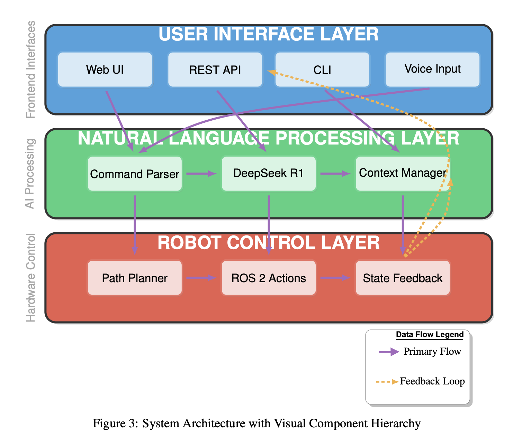

ROS 2
MoveIt 2
LLM
Natural‑Language Robot Manipulation
Built an LLM→ROS 2 bridge with command parser, context manager, and trajectory execution in Gazebo/MoveIt 2. Supports multi‑user control with tests and CI.
Gazebo
Path Planning
Autonomy
Bi‑Directional Drone: Design + Path Planning
Concept + simulation of a drone that can carry payload above and below the frame with autonomous navigation.
CAD
FEA
Embedded
Rotating Cylinder Fish‑Descaler
Affordable, mass‑manufacturable descaling system — perforated stainless drum, strap drive, and wash cycle.

Topology Opt.
FEA
Additive Mfg
Structural Topology Optimization of Headphones
Iterative stiffness‑to‑mass optimization with OptiStruct/Altair — design space reduction and manufacturable forms.